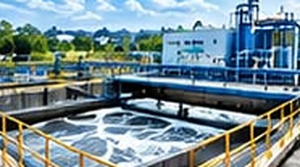
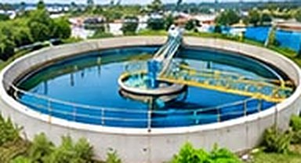
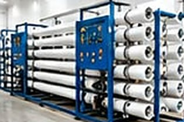
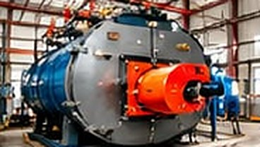
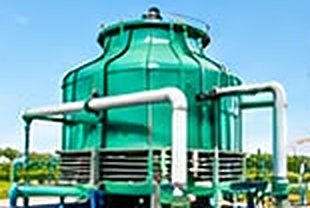
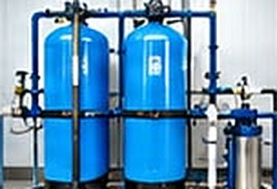
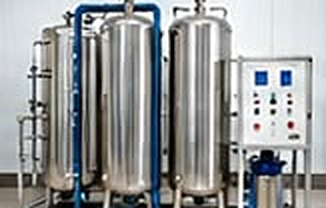
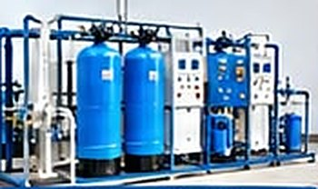

Our Services
Descaling, erection, commissioning, maintenance and water testing.
Water treatment, from design to maintenance
Choose a service to view its complete technical guide, including design principles, common problems and recommended solutions.

Effluent Treatment Plants (ETP)Wastewater characterization, coagulant optimization, aeration and biological load management.View technical guide
Technical guide: ETP_Plant_Detailed_Engineering_Manual_Expanded.pdf

Sewage Treatment Plants (STP)Screening, biological balance, clarification, disinfection and sludge handling systems.View technical guide
Technical guide: STP_Plant_Detailed_Engineering_Manual_Expanded.pdf

Reverse Osmosis (RO) PlantsPlant design, dissolved salt removal, membrane fouling control, CIP cleaning and troubleshooting.View technical guide

Boiler Water TreatmentScale and corrosion control, oxygen scavengers, alkalinity and blowdown optimization.View technical guide
Technical guide: Boiler_Detailed_Engineering_Manual_Expanded.pdf

Cooling Tower Water TreatmentCycles of concentration, biocide management, corrosion and scale control programs.View technical guide
Technical guide: Cooling_Tower_Detailed_Engineering_Manual_Expanded.pdf

Water Softener PlantsIon-exchange softening, resin regeneration, capacity planning and fouling control.View technical guide
Technical guide: Softener_Plant_Detailed_Engineering_Manual_Expanded.pdf

Demineralisation (DM) PlantsCation, anion and mixed-bed systems, regeneration, operation and maintenance.View technical guide
Technical guide: DM_Plant_Detailed_Engineering_Manual_Expanded.pdf
Deionization (DI & EDI)Continuous deionization design, performance, operating considerations and troubleshooting.View technical guide
Technical guide: Deionization_DI_EDI_Detailed_Engineering_Manual_Expanded.pdf

Zero Liquid Discharge (ZLD)Advanced recovery systems that recycle process water and eliminate liquid discharge.View technical guide
Technical guide: ZLD_Detailed_Engineering_Manual_Expanded.pdf
Filtration & ClarificationSand, carbon, cartridge, bag, ultrafiltration and multi-grade suspended-solids removal.View technical guide
Technical guide: Other_Filtration_Systems_Detailed_Engineering_Manual_Expanded.pdf
On-site services & AMC
What we do
Professional water treatment services from a manufacturer of industrial water treatment plants, chemicals & spares.
- Boiler Descaling Services
- RO Plant Descaling Services
- RO Plant Erection & Commissioning
- DM Plant Maintenance
- Softener Plant Maintenance
- ETP Erection & Commissioning
- Cooling Tower Erection & Maintenance
- Sewage Treatment Plant Erection & Commissioning
- Water testing of all kinds of water treatment plants